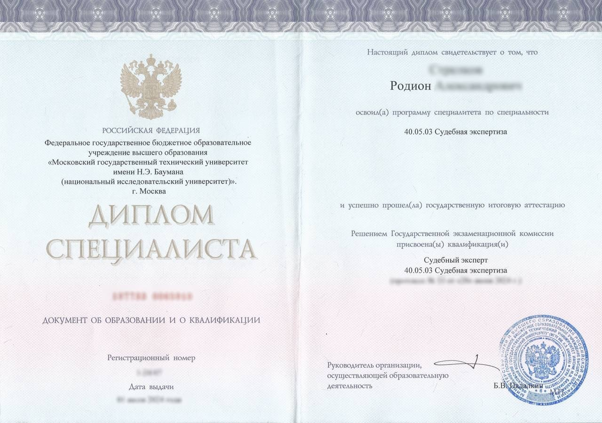

Частным лицам
- зафиксировать цифровые доказательства
- подтвердить подлинность файлов, переписки и документов
- подготовить позицию для суда или полиции
Проведение судебных и досудебных компьютерно-технических исследований, рецензирование заключений, анализ сайтов, переписки, устройств, файлов и цифровых следов. Помощь судам, адвокатам, организациям и частным лицам. Судебные и досудебные компьютерно-технические экспертизы, рецензии, исследование сайтов, устройств, файлов и цифровых доказательств.
Получить консультациюПодготавливается по инициативе стороны спора до назначения судебной экспертизы. Используется для формирования правовой позиции, направления претензий, подготовки ходатайств, оценки перспектив дела и представления в суд в качестве письменного доказательства.
Подготавливается по вопросам, имеющим значение для дела, на основе исследования цифровых объектов, документов, файлов, сайтов, переписки, журналов событий и иных материалов. Заключение оформляется в строгом соответствии с поставленными вопросами и исследовательской частью.
Проводится при необходимости проверить корректность чужого экспертного исследования: полноту материалов, примененные методы, соответствие выводов исходным данным, наличие методических и процессуальных недостатков, влияющих на достоверность результата.
Высшее образование МГТУ им. Н.Э. Баумана. Специальность: «Судебная экспертиза». Квалификация: судебный эксперт.
Практическая деятельность связана с проведением компьютерно-технических, инженерно-технических, фототехнических и иных исследований цифровых объектов. Выполняются исследования сайтов, исходного кода, мобильных устройств, файлов, переписки, электронной почты, видеозаписей, журналов событий и иных цифровых материалов для судов, адвокатов, организаций и частных лиц.



Исследования выполняются с учетом требований к структуре заключения, обоснованности выводов, идентификации объектов и описанию примененных методов, что особенно важно при представлении результата в суде.
Общение ведется напрямую с экспертом, без передачи дела менеджерам и сторонним исполнителям. Это позволяет глубже вникнуть в обстоятельства дела и корректно поставить вопросы исследования.
Заключения и исследования используются в судах общей юрисдикции и арбитражных судах, а также в рамках досудебной подготовки правовой позиции по гражданским, арбитражным и уголовным делам.
Исследования могут проводиться как очно, так и дистанционно, при условии корректной передачи материалов. Работа ведется с доверителями из разных регионов Российской Федерации.
В работе применяются специализированные инструменты анализа файлов, метаданных, цифровых носителей, журналов событий, почтовых сообщений, веб-ресурсов и иных объектов цифровой среды.
На этом этапе уточняются обстоятельства спора, изучаются исходные материалы, определяется предмет исследования и оценивается, какие цифровые объекты и сведения имеют доказательственное значение.
Формулируются вопросы, на которые действительно возможно ответить экспертным путем. Исключаются правовые оценки и вопросы, выходящие за пределы специальных знаний.
При необходимости корректируются уже подготовленные вопросы суда, представителя или заказчика, чтобы они были технически точными и пригодными для исследования.
Проводится анализ файлов, устройств, переписки, сайтов, исходного кода, журналов событий, метаданных, выгрузок, архивов и иных объектов, представленных на исследование.
В ходе анализа выявляются технические признаки, устанавливаются временные последовательности, сопоставляются версии данных, фиксируются существенные факты и формируется доказательная база.
Результаты исследования оформляются в виде мотивированного письменного заключения с описанием объектов, методики, проведенных действий и итоговых выводов по каждому поставленному вопросу.
При необходимости даются пояснения по выполненному исследованию, разъясняются выводы заключения, методика и значение выявленных технических признаков для рассматриваемого спора.
Исследование компьютеров, ноутбуков, рабочих станций, программной среды, файловой структуры и цифровых следов пользователя.
Исследование смартфонов, планшетов, мобильных приложений, системных данных, файлов, переписки и следов использования устройства.
Анализ состояния носителя, разделов, файловой системы, структуры хранения и следов удаления, копирования либо изменения данных.
Исследование сообщений в мессенджерах, социальных сетях, корпоративных сервисах, экспортированных диалогах и электронных сообщениях.
Исследование почтовых сообщений, заголовков, вложений, маршрута доставки, технических следов отправки и получения письма.
Исследование структуры хранения данных, каталогов, разделов, сигнатур и свойств файлов в облачных сервисах и личных кабинетах.
Проведена проверка сайта на соответствие техническому заданию: структура, функциональные модули, роли пользователей, формы, интеграции и требования к доступам. Подготовлено заключение с поэлементной таблицей соответствия.
Сравнительный анализ двух версий репозитория показал прямое заимствование модулей, совпадение структуры и ключевых функций, включая историю коммитов и авторские правки.
Зафиксировано содержимое сайта и личного кабинета: страницы, метаданные, путь навигации и временные отметки. Подготовлен комплект для процессуального представления.
По метаданным и журналам ОС установлено редактирование отчетных документов после даты их официальной отправки. Выявлена цепочка изменений и учетная запись пользователя.
Исследованы внутренние метаданные PDF-файлов, сведения о генераторе документов, временные параметры создания и модификации. Установлены даты формирования документов и последовательность их появления.
Исследована детализация соединений и интернет-сессий абонента Билайн. Построены схемы перемещения мобильного устройства, сопоставлены базовые станции и определен маршрут пользователя для защиты по уголовному делу.
Да, при надлежащем оформлении заключение может быть принято судом как доказательство. Экспертное исследование выполняется в соответствии с Федеральным законом № 73-ФЗ «О государственной судебно-экспертной деятельности в Российской Федерации» от 31 мая 2001 года, с соблюдением требований к компетенции эксперта, методике, полноте исследования и обоснованности выводов. Окончательную оценку относимости, допустимости и достоверности заключения в каждом конкретном деле дает суд.
Да, во многих случаях исследование возможно дистанционно, если материалы могут быть переданы в электронном виде либо на носителях без утраты их доказательственного значения.
Срок зависит от объема материалов, количества вопросов и сложности объекта. В среднем досудебное исследование занимает от 5 рабочих дней, однако точный срок определяется после предварительного ознакомления с материалами.
Досудебное заключение готовится по инициативе стороны спора и может использоваться для подготовки позиции, претензии или обращения в суд. Судебное заключение выполняется в рамках судебного процесса по поставленным вопросам и используется в материалах дела.
Обычно требуются сами объекты исследования, материалы дела или спора, перечень вопросов и контактные данные для уточнения обстоятельств. После ознакомления определяется достаточность представленных данных.
Отправьте Ваш запрос и получите бесплатную консультацию от эксперта